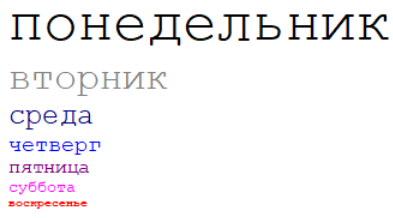

Лабораторная работа №2
Гуценков Никита. Вариант 7
Задание 1
В скрипте, используя аргументы size, day и color функции WeekDay(), отобразите названия дней недели уменьшающимся
размером (начиная с 7) и разными цветами:

Задание 2 (ничем не отличается от ЛР1)
В соответствии со своим вариантом написать Java-скрипт для вычисления значения функции b=f(x,y,z). Значения x, y
и z должны вводиться пользователем, используя метод prompt. При выводе информации предусмотреть форматирование
документа, вывод текста задания, включая рисунок исходной функции, и вывод информации о разработчике
скрипта.

Задание 3
1. Создайте массив treug «треугольных» чисел, т.е. чисел вида n(n+1)/2 (где n=1,2,… 10) и выведите значения этого
массива на экран в строку (через 2 пробела).
2. Создайте массив kvd квадратов натуральных чисел от 1 до 10, выведите значения этого массива на экран в
строку.
3. Объедините эти 2 массива в массив rez, выведите результат на экран.
4. Отсортируйте массив rez в обратном порядке, выведите результат на экран.
Задание 4
1. Сформируйте одномерный массив (не менее 15 элементов, для генерации значений массива можно воспользоваться
функцией random), выведите значения этого массива на экран в строку.
2. Выполните задание в соответствии с вариантом, не используя встроенные функции
Задание 5
1. Создайте массивы fruits=[‘apple’,’pineapple’,’mango’,’melon’,’grape’]; citrus=[‘orange’,’lemon’,’lime’].
2. Последовательно, в каждой отдельной строчке, выведите:
а) массив fruits;
б) массив citrus;
в) объединенный массив fruits;
г) массив fruits, в котором после mango вставлены: pear, cherry, plum, raspberry, strawberry;
д) массив fruits, в котором удалены последние 3 элемента;
е) выведите отсортированный в алфавитном порядке массив fruits;
ж) выведите массив fruits в обратном алфавитном порядке;
з) выведите массив fruits, отсортированный по длине слов.